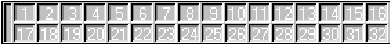
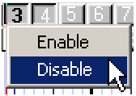
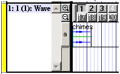
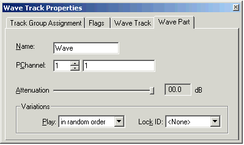

By Scott Selfon, Audio Content Consultant
Content and Design Team, Xbox Advanced Technology Group
This is part of a series of "column-style" white papers on various aspects of Microsoft® DirectMusic® Producer, the content creation tool for DirectMusic. If you would like to see a specific area addressed, please send e-mail to content@xbox.com.
Variations are among the most powerful features of Microsoft® DirectMusic®. They allow the sound designer/composer to create multiple versions (up to 32 per part) of audio tracks that can then be chosen from purely randomly, or in a more controlled manner, in the final runtime performance. The author controls what notes are in each variation, how subtle or obvious the differences between variations are, and whether one instrument picking a variation means any other instruments should play the same variation. A pair of quick examples:
A drum part with five different variations, a bass guitar with four different variations, and a melodic solo with two variations could yield up to 20 different unique performances.
An outdoor soundscape with 20 different variations of crickets (different timings, pitch-shifted and/or different samples) and 32 different variations of wind blowing could yield 640 unique performances.
The behavior of variations in DirectMusic Producer can be somewhat confusing for someone coming from a linear sequencer or digital audio software. This paper will clarify how variations work in Producer as well as differences between behavior in Producer and the behavior in the runtime environment.
Variations are used in several areas of DirectMusic:
If you've looked at a Wave Track Part or Pattern Track Part (within a Segment) or a Pattern Part (within a Style), you've probably noticed the following interface:

This interface is how DirectMusic Producer displays the 32 variations per part; each button represents one variation's state for this part. You can listen to ("audition" 1) one or more specific variations or let the playback engine choose variations as it would in the performance. The button states also indicate which variation(s) you're currently editing, allowing you to add or remove waves (for Wave Tracks) or MIDI data (for Pattern Tracks and Pattern Parts).
Figure 1 Variation 1 has data; Variation 2 is empty.
If a number is white, this variation is currently empty. If it's black, it contains one or more notes, MIDI controller messages, or waves. Note that an empty variation doesn't necessarily mean the composition engine will never choose this variation. It is entirely reasonable and often creatively desirable to have "empty" variations in many contexts. For instance, when creating a looping ambience, you might not want to hear a certain sample of the wind howling on every single loop.
Figure 2 Variations 1 and 2 are enabled; 3 and 4 are disabled.
Often you won't wish to author 32 different variations for every Track. If you want to use only several, you can disable other variations—disabled variations will never be chosen by the performance engine. A disabled variation, which appears with a checkered background, can still be auditioned and edited within Producer. With few exceptions, it's a good idea to remove data from variations you have disabled, because this will often save space in runtime files.
To toggle enable/disable:

Figure 3 Preparing to disable variations 3 and 4.
Figure 4 Variation 1 is selected, variation 2 is unselected.
The button pressed state indicates which variations are currently displayed in the Track in Producer for editing. It also dictates which variations will receive inserted notes/MIDI controller data/waves.2 (An inserted note will belong to all of the variations whose buttons are pressed.) Note that button selection state has no effect on the runtime performance: a pressed button will not be chosen any more or less frequently than an unselected button. However, button selection does determine variation selection in Producer's audition mode (see Audition Mode section below).
To toggle select/unselect for a variation, click its button. Again, note that you can select and edit disabled variations.
To select all enabled variations, click the narrow vertical bar to the left of the variation buttons. Or you can click and drag over the buttons to press them.
Figure 5 Clicking the Select All bar selects all enabled variations (in this case, 1–4; 17–20 are disabled, so they remain unselected)
To select a single variation (and unselect all other variations), double click its button. (Double clicking again will toggle back to the previous state of variation selections.)
Now that we've got a few variations put together for a Track, we want to listen to some of them. We've got two choices: as they'll appear in the runtime environment or in the track's audition mode.
To put a Track in audition mode, click anywhere in the Track. Note that only one Track can be in this mode at a time. The indication that a Track is in audition mode is when its selection bar (the thin strip to the left of the track title bar) is yellow.3

Figure 6 A Wave Track in audition mode. Variation 1 will play every time this Segment is triggered (in Producer only).
While a Track is in audition mode, the engine's variation choices are overridden by the button states in the track. If multiple buttons are pressed down, they will all play simultaneously. If no buttons are selected, no variations will be played. Again, these behaviors are not applied in a real world performance—at runtime, only one variation can be played at a time per Track.
Audition mode is useful in particular to check content you've just recorded or just to hold one part steady while all others change variations with each playback/loop.
To take a Track out of audition mode, click in another Track. Note that Tracks other than Wave Tracks, Pattern Tracks, and Pattern Parts in Styles do not have an audition mode, because they don't have variations. You can also click in the topmost area (the timeline) in a Style or Segment to ensure no Tracks are in audition mode.
The default behavior for a Track at runtime (and in Producer when not in audition mode) is to choose a random variation. You can influence the choice in several ways, the most basic of which is by changing a Track's variation behavior in its Properties dialog box.
To open the Properties dialog box,4 right click in a track and choose Properties from the shortcut menu, or just press F11.

Figure 7 A Wave Track Part Properties dialog box.
The following behaviors are supported:
Play in Random Order—The default behavior. A random enabled variation is chosen.
Play in Order From First—The first time a Segment is played, variation 1 is chosen. The next time it plays (or loops), variation 2 is chosen, and so on, looping around after variation 32. If a variation is disabled, it is skipped.
Play in Order From Random—A random variation is chosen when the Segment is first played. The next play/loop will choose the next enabled variation.
Play With No Repeats—A random variation is chosen each time, but the same variation will never be selected twice in a row.
Play By Shuffling—A random variation is chosen each time, but no variation will repeat until all enabled variations have been chosen once.
By setting two or more parts to the same Lock ID, you can ensure that they always choose the same variation as each other. The variation that they choose will still be influenced by the play mode and other factors, but if, for instance, part A plays variation 24, you will be assured part B plays variation 24 as well. This is very effective for variability in orchestration—two instruments (say, a flute and an oboe) have the melody but on different variations. Lock them together, and you're guaranteed that only one will play the melody on each playback.
For more information about variations and other topics, please consult the DirectMusic Producer help document, or send e-mail to content@xbox.com.
1 In most instances, the word audition (aka "design-time") refers to items that can be experimented with in Producer without affecting final playback in the application (aka "run-time"). For instance, if you mute a channel in the output status toolbar (toolbar with the All Notes Off button), that mute will not be applied to the content you create when played outside of Producer.
2 For information on basic DirectMusic Producer functionality, such as note insert, please consult the "Getting Started with DirectMusic Producer" white paper.
3 The track is also in audition mode if the strip is orange—this actually indicates "red" (selected for clipboard operations from the timeline) and "yellow" (audition mode) at the same time.
4 Producer makes use of open property dialog boxes. You'll notice they generally don't have the OK/Cancel/Apply buttons of some traditional dialog boxes. This is because Producer property dialog box edits are applied immediately, while the property dialog box is open. This is so you can keep the property dialog box open, and as you click on something, any properties that object exposes are listed for immediate editing in the property dialog box.
Tuesday, December 12, 2000